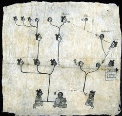

The Persistence of Nahua Culture
Indigenous culture persisted throughout the colonial period even as the Nahuas experienced deadly illnesses to which they had no immunity; forced labor; taxation; conversion to an alien religion; and the exploitation of their resources by the invaders and their descendants. The retention of native leadership in Indian communities, which generally remained intact, fostered a collective identity within the community even as these changes occurred. Indigenous people utilized the imported Spanish legal system and were aggressive litigators. Spoken and written Nahuatl further strengthened cultural community and continuity; pictorial forms of writing also persisted, although their use diminished over time.
Many documents that survive from this period speak of families, inheritance, disputes, and the property rights of women. Maps focus on litigation by indigenous communities defending their farming property from destructive livestock and unscrupulous land grabs, and reasserting their rights to diverted water sources. Other documents deal with land disputes between indigenous communities. Marriage, death, and taxation are represented, as are native historians’ accounts of their history, ancestry, religion, and the assertion of land rights based on ancient memory and contemporary land needs.
Wills and family disputes
At least half of all existing colonial Nahua documents (both pictorial and alphabetic) are wills bequeathing property and possessions to heirs. The pictorial wills of Don Miguel Damián show two different ways in which documents of this kind were drawn up. Then, as now, there were also legal disputes regarding the disposition of family property as in the litigation between Juliana Tlaco and her daughter-in-law Pedronilla Francisca Tenuch. In addition to the three pictorial documents in the Newberry’s collection, two alphabetic documents have also survived (Archivo General de la Nación, Mexico). All of the families represented were from the district of Xochimilco, on the outskirts of Mexico City.
Newberry Library: Vault oversize Ayer MS 1900

Don Miguel Damián sits, his eyes closed in death, on a straw chair. His noble status is indicated by the headdress behind his chair. Doña Ana, his deceased first wife faces him; Doña Ysabel, his surviving second wife (of one year), is behind him. Don Miguel's four children are above: Doña María, Don Gaspar, Doña Vaula [Baula, Paula], and Don Francisco Damián. The heirs’ names are written on the inherited properties which include orchards, buildings, and land.
Newberry Library: Ayer 507 .B6 1891
Don Miguel Damián, deceased and wrapped in a shroud, is at the upper left in this list of his goods and heirs. Circles with crosses represent money ("xv ps°” [pesos]) given to the church for masses and prayers to be said in his name. Doña Ysabel, his surviving second wife, and her inheritance are shown in the second band; Don Miguel's children follow: Don Gaspar, Don Francisco, Doña Baula (the page is torn and her image lost), and Doña María. The listed order of the distribution of goods follows that of alphabetic documents.
Newberry Library: Vault oversize Ayer MS 1902
This pictorial genealogy identifies the key actors in the property litigation between Pedronilla and her mother-in-law, Juliana. Speech scrolls indicate the chief characters and darkened faces indicate the deceased. Pedronilla (named at upper center) and her deceased husband Constantino (named at right) are both descendants of the same unnamed family patriarch; their deceased infant son Felipe is depicted between his parents. Constantino's mother Juliana is on the right. A house (drawn at right) that belonged to Juliana's parents is among the properties in dispute.
Newberry Library: Vault oversize Ayer MS 1901
This document records the house, lands, blankets, clothing, chocolate cups, and other goods Pedronilla claims to have inherited from her deceased husband, Constantino. Her name occurs three times beside property that is indicated by linking black or red lines as belonging to her. She cedes only the upper house and land to her mother-in-law, Juliana. However, Pedronilla's claims only partially agree with her husband's written Nahuatl testament, which is held by the Archivo General de la Nación, Mexico
Newberry Library: Ayer 507 .B6 1891
The document representing Juliana's claims combines genealogy and depictions of the disputed items. Juliana appears at top right followed by her deceased husband, son, and grandson; Pedronilla is linked only to her son.
In written testimony in the Archivo General de la Nación, Mexico, Juliana declares that she inherited the properties and goods from her parents and the properties were not her husband's to bequeath to their son. She further notes that had her son not died, he would have inherited the properties now in dispute. The case was ultimately decided in Juliana Tlaco’s favor.
Newberry Library: Ayer MS 1477 folder 1

Although stained and damaged, this plan from Juan de la Cruz's will bequeathing land to his wife, María de los Ángeles, clearly indicates the ongoing use of Nahua pictorial writing to convey information, especially in legal documents related to property. Arms, hands, and a heart combined with dots indicate the dimensions of the property; footprints mark paths of movement. There are two informative Nahuatl notations: Tlama[n]tliyn, a reference to “something being given,” and Tonatiuh Icalaquianpa[n] meaning “west.”
Newberry Library: Vault Ayer 1801 Map 1
This legal document records the resolution of a land use dispute between indigenous farmers of Tultepec and Spanish rancher Juan Antonio Covarrubias. As a result of this suit, livestock were restricted to the area outlined in red and boundary markers (mojones); the area outside the red area was designated for cultivated fields. The largest church, Santa María Nativitas, indicates Tultepec, and smaller churches mark subsidiary towns. The small buildings are indigenous houses and the large structure in the upper left is Covarrubias’ estate. The document is written in Spanish and the painting is on European paper backed with amatl.
Newberry Library: Ayer MS 1801 Map 2
This map probably accompanied recorded litigation between local indigenous communities over the sale of a property to a Spaniard and the problem of possession and use of Lake Xaltocan for irrigation. Irrigation ditches (asequias) feature prominently in this map in which the lower third is “Indian land” (tierras de los yndios); native style houses surround the grid plan town of San Francisco [Tenopalco] marked by its church. On the right, crosses mark the boundaries of Indian land labeled “empty” (valdios). At left, Cristóbal Rodríguez is depicted, his large hacienda above. The notation by his head reads “the part where he is asking for the lands. Large plain” (“la parte donde se piden las tierras. Savana grande”).
Newberry Library: Vault oversize Ayer MS 1903

This map combines both indigenous methods of conveying information, and clearly non-indigenous modes of depiction. Traditional indigenous place signs in the shape of hills (tepetl) alternate with straw thatched houses (xacalli) around the edge of the map. A wavy band curving from top to left suggests a river, although no signs for water are included; irregular “rocks” and fir trees are beside a house alongside the “river.” Among the illegible notations under most of the houses and hill-signs, pueblo [p°; town] can be faintly seen. The non-indigenous style of rocks, trees, and water suggests a late date or an artist not fully conversant with indigenous pictographs.
Newberry Library: Vault oversize Ayer MS 1906
This map of the mining district of the Temascaltepec region (central Mexico) was probably made for the Spaniards Luis de León and Miguel Luis de Acevedo as part of their legal petition to take possession of two properties on the right (indicated by houses; the Spaniards’ request is noted on the map). Churches mark the nearby towns of San Martín, San Miguel Yxtapan, and Santa María. However, indigenous-style pictographs are used to represent the important landscape features. The mines are represented at the lower left; paddle-like copper tools are at the map's center; and the two indigenous houses on the left are ore refineries. Other features, such as hills and mountains, streams with wavy lines and swirls, and roads with footprints are easily recognizable.
Newberry Library: Ayer MS 1476
Three times a year, the indigenous people of Cuitlahuac were required to make tribute payments to their Spanish overlord, Alonso de Cuevas. This receipt, written in pictographs, alphabetic Nahuatl, and Spanish, verifies the amount paid: 115 pesos and 5 tomines. This figure is represented by five large pink bundles each topped with a banner signifying 20 (5 x 20 = 100 pesos); three smaller blue bundles of five are 15 pesos; a disk marked “4” plus a simple disk are the 5 tomines that complete the payment.
Newberry Library: Vault Ayer MS 1481 b (1f)

Important sacraments in the lives of indigenous people were usually recorded in their native language, Nahuatl. These pages contain a list of marriages from the Monastery of Santiago in Tlatelolco, Mexico City. The records date from 1632 to 1633.
Newberry Library: Vault Ayer MS 1491

This poignant little book records deaths and burials between February 3, 1605 and August 31, 1642 in Tepejí del Río (Hidalgo, Mexico). Women are indicated by heads wrapped with braided hair; men are shown as heads with short dark hair. Among the entries for 1613 are Pedronilla (Sunday, Oct. 13); Marcos Jacobo (Wednesday, Oct. 30); Juana Sánchez (Tuesday, Nov. 5); Julio Cacalotl (Thursday, Nov. 7); Alonso (Saturday, Nov. 23); and Miguel Chachalaca (Sunday, Nov. 24), all signed by Father Alonso de Paz, parish priest.
Newberry Library: Vault Ayer MS 1481 F3 a&b
In 1570, at the suggestion of Friars Miguel Navarro and Jerónimo de Mendieta, the Indian leaders of Mexico City and Texcoco agreed to write a letter to King Philip II to complain about their living conditions and the maltreatment they received from the Spaniards. The two friars planned to carry the letter with them to Spain, but they did not receive it in time. After returning to Mexico from Spain in 1572, they found it in the possession of Father Alonso de Molina.
Newberry Library: Ayer MS 1884 Doc 14

In 1667 the tlatoani (indigenous governor) of Tototepeque, Agustín Tolentino, went to the town of Santa Inés, claiming that Tototepeque was the cabecera (head town) of the region. Asserting his authority, he had local resident Baltasar Solitutu brutally flogged for refusing to appear when summoned. Santa Inés did not consider itself subject to Tototepeque. When Solitutu sued his tormenters, the San Agustín Tenango governor wrote a letter of support to the corregidor (Spanish officer in charge of a district) Don Andrés de Trejo Caruajal, who ruled against Tolentino. A court interpreter translated the letter from Nahuatl to Spanish for the legal record.
Newberry Library: Vault Ayer MS 1162b

Like the Spanish conquistadors that had served the Spanish king in the conquest of Mexico, the Tlaxcalans requested privileges from the king in recognition of their services as allies of Hernán Cortés. Throughout the following centuries, the Tlaxcalans continued to fight to maintain their status, reminding the crown of their loyalty and merits in assisting the Spaniards.
Eighteenth century land documents
In the sixteenth and seventeenth centuries, deadly epidemics and the forced concentration of scattered indigenous populations (congregación) created so-called “empty” lands. Consequent challenges to land ownership in the late seventeenth and early eighteenth centuries necessitated the legalization of land titles (composición) from ca. 1650-1750. In response to this challenge, indigenous communities had titles made to document their ownership of the land. Meant to be used as legal documents, these land documents are written in Nahuatl and have extensive painted images which refer to ancient ancestral ownership of the lands in question. The so-called Techialoyan group of these documents from the Valley of Mexico are noted for their use of rough amatl and an archaic Nahuatl literary style.
Newberry Library: Vault oversize Ayer MS 1907
Precolumbian Teotihuacan’s two great pyramids are significant landmarks in this eighteenth- century boundary dispute between indigenous San Francisco Mazapan and a neighboring indigenous community. Teotihuacan’s Street of the Dead is in the lower part of the map. The green mound at the lower left represents the Pyramid of the Moon; an inverted green Pyramid of the Sun is at the center of the Street. After Teotihuacan's collapse (ca. 650), indigenous people continued to live in the pyramids' shadow. Explicit references to the past through pictographs, Nahuatl, and men in ancient dress were used to create an increased aura of validity and credibility in legal cases of this kind.
Newberry Library: Vault Ayer MS 1472

A Techialoyan, the Codex Zempoala describes the land and records the names, acreage, and boundaries of Zempoala’s districts. Churches, city halls, and houses of tribute-payers are depicted. Also shown are the principal crops cultivated in the area: the maguey plant and nopal cactus. The left page of this document invokes prehispanic origins of ownership through the depiction of the mountain (Tzinquilocantepetl) which established the boundary, and Ixtlilxochitl, royal ancestor and Cortés’ ally. On the right page, the noble lord and chief Tecpancacaltzin and his son Xilomantzin are depicted.
Newberry Library: Vault Ayer MS 1479

Also a Techialoyan, this page from the Codex Tepotzotlan represents a section of the land holdings, the houses of its tribute-payers, and the predominant crop, maguey cactus. The text names the neighborhood and a distinctive natural characteristic, “There are many coaxochitl flowers in Concepción barrio.”
Cochineal
Cochineal is a brilliant crimson or chili-red dye produced from the cochineal insect—Europeans initially thought the insects were seeds (grana). The Aztecs, who cultivated the insects on nopal cactus paddles, used the dye for coloring cloth and painting books. During the colonial period, cochineal became a source of great wealth as European demand for cochineal-dyed cloth flourished. The Spanish retained a monopoly on the dye until the late eighteenth century when the insects were smuggled out of Mexico. Cochineal is commonly used today as a dye in food and cosmetics.
Newberry Library: Vault Ayer MS 1106 D8 Box 1 Folder 15

This compilation of reports regarding New Spain and Peru includes a description of the cultivation and preparation of cochineal. Here, two indigenous people harvest the cochineal insects from the paddles of a huge nopal cactus, scraping them into special bowls. Both wear clothing with crimson stripes and accents. The woman is dressed in an indigenous tunic (huipil) and kneels in traditional fashion.
Newberry Library: Vault Ayer MS 2178
In this book, twelve large watercolor scenes illustrate the annual cycle of planting, cultivating, and harvesting the nopal cactus. In March and April, the cochineal insects are placed on the new cactus plants to develop; in August and September they are harvested. The cycle begins anew with the pruning and replanting of the nopals in December. The temple-like building at the top of both scenes alludes to the indigenous antiquity of cochineal cultivation.
Newberry Library: Vault Ayer MS 1031

On Plate 7, a man (fig. 1) dressed in a blue striped white tunic and cochineal-dyed pants scrapes the cochineal beetles from the nopal cactus using a deer tail. Fig. 2 depicts a deer tail and fig. 3 the gourd bowl in which the cochineal are collected (“Xicalpestle en que aparan la Cochinilla”).
Plate 9 shows the next step in the process. After removing the cochineal from the nopal cactus, the insects are killed in a traditional steam bath (fig. 1 “temascale, o baño de los Indios”). Fig. 2 provides a more detailed view of the steam bath.
Newberry Library: Vault folio Case MS 5011
The Nahua historian Domingo Francisco de San Antón Muñón Chimalpahin Cuauhtlehuanitzin edited Francisco López de Gómara’s Conquista de México in the process of composing his own indigenous history of Mexico. According to historian Susan Schroeder, Chimalpahin’s writings “constitute the most exhaustive and complete narrative history of Indian Mexico (50 C.E—1631) in any language by a known indigenous author.”
On the page reproduced, Chimalpahin modifies Gómara’s text, labeling Cortés’ famous interpreter Malintzin with the honorific title “Tenepal.” By contrast, Gómara had referred to her only as Marina.
Newberry Library: Ayer MS 1481 a2

This Nahuatl play based on the biblical story of Abraham and the sacrifice of Isaac explored a traditional theme of Christian sacred history for a Nahua speaking audience. The theme of obedience to God is demonstrated first through Isaac’s submission to his father and then by Abraham’s willingness to sacrifice his son at God’s request. Though not the main theme of the play, the subject of human sacrifice likely played an important role in reminding an indigenous audience to accept the Christian covenant in the terms established through divine law. More importantly, through performance, this play displays appropriate ways for a Nahua to address God and to behave obediently to one’s parents as well as to God’s commandments.
Newberry Library: Ayer broadside PM4068.1 .I93 1755
This single sheet contains the Lord’s Prayer, Ave Maria, Apostles’ Creed, Salve Regina, Ten Commandments, Five Commandments of the Church, and Seven Sacraments in Nahuatl. It was printed for Indians and priests to purchase and display on a wall or at an altar. The names of the sacraments are in Spanish, and other Spanish words and phrases are also included.
Newberry Library: Vault Ayer MS 1168 Doc. 1 and 2

In the late 1880’s, José María Lizaula assembled a series of documents dating from 1531 to 1885 to support his claim to the pension granted in 1590 by King Philip II to the direct descendants of the Emperor Motecuhzuma Xocoyotzin. Among his documents, Lizaula included a copy of a genealogy of Motecuhzoma said to have been made in the sixteenth century and a poignant, nineteenth-century engraving of the Emperor Motecuhzoma. Lizaula's claim was ultimately dismissed by the Mexican Supreme Court and Treasury Department.